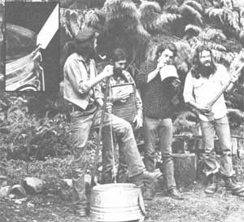

Marc Bristol and other Washington State grassroots musicians wail away on a gutbucket, washboard, jug, and axe. Axe? ""Actually, "" says Marc, ""the axe, in this instance, is just a gag ... although I think it'd make a pretty good percussion instrument!"" Inset photo shows detail of lower end of gutbucket stick. Note notch and bevel.